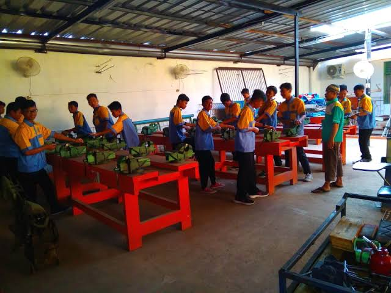
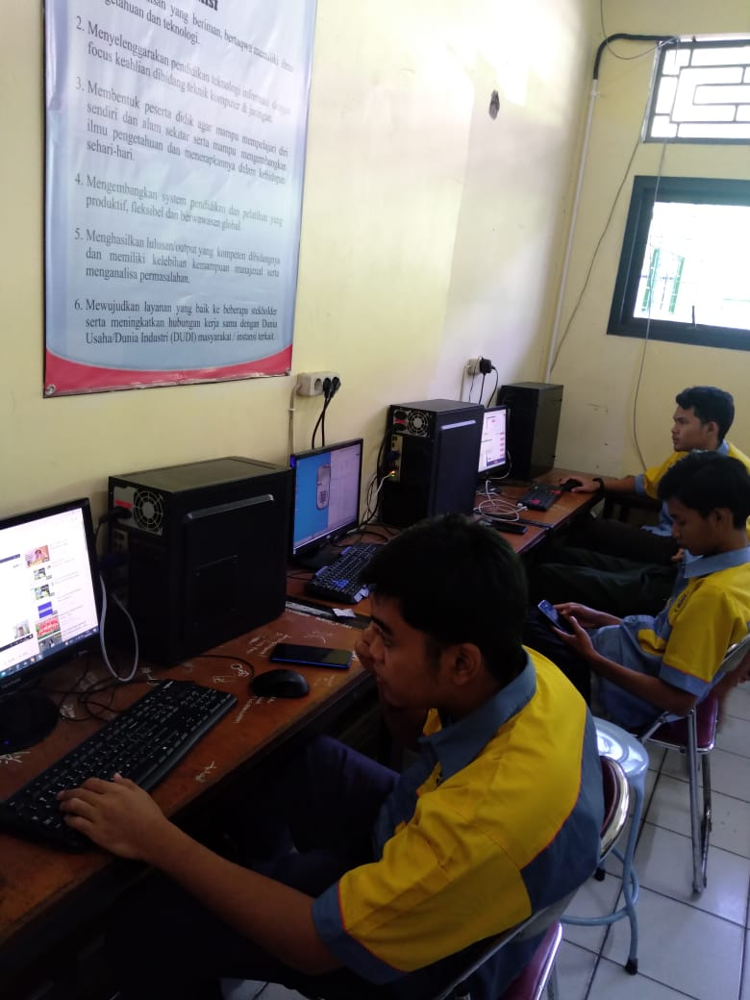

Pada tahun 1996 Yayasan AL-HADIID menyelenggarakan bidang pendidikan dengan nama STM AL-HADIID Cileungsi dengan mendapat izin dari Kepala Kantor Wilayah Departemen Pendidikan Dan Kebudayaan Provinsi Jawa Barat. STM AL-HADIID Cileungsi pada saat itu menempati luas tanah dan luas bangunan 200 M2 dengan jumlah siswa 24 orang terdiri dari 2 jurusan yaitu Jurusan Teknik Otomotip dan Jurusan Teknik Mesin. STM AL-HADIID Cileungsi dikhususkan untuk siswa laki-laki. Kini STM AL-HADIID Cileungsi telah berganti nama dengan SMK AL-HADIID 1 Cileungsi.
JURUSAN

Teknik Kendaraan Ringan (TKR)
Teknik kendaraan Ringan adalah ilmu yang mempelajari tentang alat-alat transport darat yang menggunakan Mesin,terutama mobil yang mulai berkembang sebagai cabang ilmu seiring dengan diciptakannya mesin mobil

Teknik Permesinan (TPM)
Di teknik permesinan kamu akan menggunakan ilmu fisika,matematika, dan kimia. Kamu akan menyiapkan segala hal tentang sistem mekanis, mulai dari desain,cara dan hasil kerja. Serta material pembangunan

Teknik Komputer dan Jaringan (TKJ)
Teknik komputer dan jaringan merupakan ilmu berbasis Teknologi Informasi dan komunikasi terkait kemampuan algoritma, dan pemograman komputer,perakitan komputer,perakitan jaringan,pengoprasian perangkat lunak, dan internet

Teknik Listrik
Kamu akan mempelajari tentang perencanaan dan pemasangan instalasi penerangan,tenaga pemasangan dan pengoprasian motor listrik dengan kendali elektromekanik